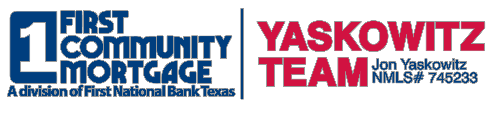
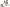

Need a team bio to put here.
Apply Online Now!
Get Our Mobile App!
TeamYaskowitz@1stnb.com
Website
Twitter
Instagram
Find us on Facebook
LinkedIn
Privacy Policy
| Configured and administered by Austin Gonzalez 